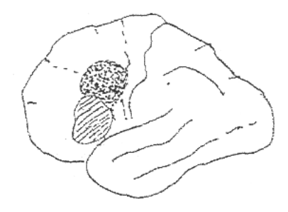

開卷有益 ／
臨床心理師 ／ 臨床心理學總論（一） ／ 104 年第 2 次104 年第 2 次臨床心理師臨床心理學總論（一）試題與答案
這一頁是民國 104 年第 2 次臨床心理師臨床心理學總論（一）的整份歷屆試題，共 40 題，題目與標準答案出自考選部「國家考試試題及測驗式試題答案」開放資料，其中 39 題附有詳解。以下逐題列出題幹、選項與答案；要計時作答或記錄成績，請用線上練習。
考選部原始場次代碼：2
線上作答這一科 →
全部 40 題
第 1 題
根據 Price & Lento（2001）的研究，某種特定的心理疾患，可能由不同的初始條件與不同的脆弱度歷程所 引起，這種現象所形成的構念，稱為：
（A） 多元定局（multifinality）（B） 衍生定局（epifinality）（C） 表面定局（surface finality）（D） 深源定局（source finality）答案：（B）
詳解與考點 正解：題眼在「不同的初始條件與不同的脆弱度歷程」導向「某種特定疾患」——判準是多條發展路徑匯聚到同一結果。依題幹所引研究，此種同一結果可由不同路徑形成的構念稱為衍生定局（epifinality），故選 B。
A：多元定局描述同一初始條件可能導向不同結果，與題幹「不同初始條件導向同一疾患」的方向相反，故非答案。
C：表面定局不是本題所指的發展精神病理學構念，故非答案。
D：深源定局也不是本題所指的構念，故非答案。
本題考點：衍生定局（epifinality）——不同脆弱性與發展歷程可匯聚為同一心理疾患；多元定局（multifinality）則是相同風險可分化為不同結果。
第 2 題
王先生人際關係淡漠，甚少與人來往，大部分時間花在與靈界相通，下列何者最符合該偏差行為之定義？ ①偏離社會常模 ②個人受苦感 ③職業功能受損 ④社會功能受損
（A） ①④（B） ②③（C） ①③（D） ②④答案：（A）
詳解與考點 正解：題眼在人際淡漠、甚少往來及將多數時間投入與靈界相通——判準是題幹實際呈現哪些偏差行為界定面向。其行為偏離一般社會常模，且明顯削弱與人互動的社會功能；題幹未指出主觀受苦或職業表現受損，故成立的是①④，選 A。
B：②個人受苦感與③職業功能受損都未由題幹提供。不能因行為不尋常就推定當事人痛苦或工作失能，故非答案。
C：①可由題幹支持，但③職業功能受損沒有資訊支持，故非答案。
D：④可由人際疏離支持，但②個人受苦感未明示，故非答案。
本題考點：偏差行為界定（abnormal behavior）——可從統計或社會常模偏離、主觀痛苦及功能損害等面向判斷；作答須以題幹已呈現的證據為限，不能自行補入未述的職業失能或受苦感。
第 3 題
根據 Ingram 與 Price（2001）的觀點，有關脆弱性（vulnerability）概念的敘述，下列何者錯誤？
（A） 是一種特質（trait）（B） 是不可改變的（C） 需要壓力促發（D） 是不易觀察到的答案：（B）
詳解與考點 正解：題眼在「何者錯誤」及脆弱性——判準是脆弱性描述增加問題風險的傾向，不表示一經形成便完全不能改變。脆弱性可受發展、環境與處遇影響，故「不可改變」是錯誤敘述，B 為應選項。
A：脆弱性可作為相對穩定的特質性風險傾向來理解，故非答案。
C：脆弱性通常需在壓力或誘發條件下才較可能表現為症狀，符合素質—壓力觀點，故非答案。
D：脆弱性常是潛在的，未必能直接觀察，需由發展史、心理衡鑑與行為資料推論，故非答案。
本題考點：脆弱性（vulnerability）——是增加疾患風險的特質或傾向；素質—壓力模式（diathesis-stress model）強調其與壓力交互作用；可塑性不等於沒有相對穩定性。
第 4 題
根據診斷標準對偏差行為進行診斷分類時，那一種效度最重要？
（A） 預測效度（B） 專家效度（C） 建構效度（D） 內容效度答案：（C）
詳解與考點 正解：題眼在「診斷標準對偏差行為進行診斷分類」——判準是診斷分類是否真正對應其欲界定的心理病理構念。建構效度檢驗分類與理論構念、相關症狀及可區辨性是否一致，對診斷系統最核心，故選 C。
A：預測效度關心診斷能否預測後續表現或結果，雖重要，但不能單獨證明分類本身界定了正確構念，故非答案。
B：專家判斷可提供發展診斷準則的意見，但不取代對診斷構念的實證檢驗，故非答案。
D：內容效度著重題目是否涵蓋內容範圍；診斷分類更關鍵的是其構念界定與實證關聯，故非答案。
本題考點：建構效度（construct validity）——檢驗診斷分類是否測得或界定預定的心理病理構念；預測效度（predictive validity）與內容效度（content validity）提供不同層面的佐證。
第 5 題
有關 DSM 診斷系統的信度問題，下列何者正確？
（A） DSM 診斷系統各版本皆具有良好的信度（B） 直到 DSM-IV-TR，才具有良好信度（C） 只要有明確的診斷標準，便可建立良好信度（D） 每個臨床工作者對診斷標準解讀不同，要建立高度信度，仍具有相當挑戰答案：（D）
詳解與考點 正解：題眼在 DSM 診斷系統的「信度問題」——判準是不同臨床工作者能否在相同資料下作出一致診斷。即使準則明確，訪談取得的資料、臨床判斷與準則解讀仍可能不同，建立高度診斷者間信度持續具有挑戰，故選 D。
A：不能把 DSM 各版本概括為皆有良好信度；診斷信度須依特定版本、疾患與使用情境檢驗，故非答案。
B：把信度改善歸結於單一版本過度簡化，也無法保證所有診斷與場域都有良好一致性，故非答案。
C：明確準則有助提升一致性，卻不是充分條件。這是最強誘答，因為它抓到操作化的優點，錯在忽略資料蒐集與臨床解讀仍會造成差異，故非答案。
本題考點：診斷信度（diagnostic reliability）——核心是診斷者間一致性（inter-rater reliability）；操作化準則可改善一致性，但無法消除訪談、資訊與解讀差異；本題談一般原則，未據此推論特定 DSM 版本或疾患的信度數值。
第 6 題
關於臨床顯著性（clinical significance）的敘述，下列何者正確？
（A） 臨床顯著性是指研究者做統計分析時，看到了統計值的顯著效果（B） 受試者人數愈多時，臨床顯著性就愈容易產生（C） 臨床顯著性是統計分析達到顯著後，需要進一步釐清的效果（D） 如果統計值已達到顯著，就不需要再看臨床顯著性答案：（C）
詳解與考點 正解：題眼在「臨床顯著性」——判準是治療或研究效果是否大到足以改變個案的實際功能與生活，而非僅有統計上的不太可能由隨機誤差造成。統計顯著後仍要檢視效果是否具臨床意義，故選 C。
A：統計值顯著是統計顯著性，不等於臨床顯著性，故非答案。
B：樣本變大會使小差異較可能達統計顯著，不能因此使效果自動具有臨床重要性，故非答案。
D：統計顯著不表示效果對個案有實質價值。這是最強誘答，因為兩者都談「顯著」，但統計問題與臨床問題不同，故非答案。
本題考點：統計顯著性（statistical significance）與臨床顯著性（clinical significance）——前者評估結果與隨機誤差的關係；後者評估效果量、功能改善與實際重要性；兩者須分別判讀。
第 7 題
針對一位接受治療的病患進行深度（intensive）的研究，這種方法稱為：
（A） ABAB 設計（B） 非系統性的觀察（C） 控制性的觀察（D） 個案研究法答案：（D）
詳解與考點 正解：題眼在「一位接受治療的病患」及「深度研究」——判準是研究單一個案並密集蒐集其臨床資料的設計。此種作法稱為個案研究法，故選 D。
A：ABAB 設計是特定單一個案實驗設計，需交替基準線與介入階段；題幹只描述深度研究，未指明撤回與重複導入，故非答案。
B：非系統性觀察缺少明確規則與可檢驗性，不足以界定深度臨床研究，故非答案。
C：控制性觀察是觀察方式的描述，不是以單一病患進行密集研究的標準研究名稱，故非答案。
本題考點：個案研究法（case study）——對單一個案進行深入、脈絡化的資料蒐集與分析；單一個案實驗設計（single-case experimental design）則另須明確操弄與階段比較。
第 8 題
撤回設計（withdrawal design）包含那些主要步驟？①進行隨機分派 ②建立基準線 ③進行深度晤談 ④導入獨變項 ⑤撤回獨變項
（A） ②④⑤（B） ①④⑤（C） ②③④（D） ①②③答案：（A）
詳解與考點 正解：題眼在「撤回設計」——判準是先觀察未介入時的基準線，再導入獨變項，必要時撤回該獨變項以觀察依變項是否隨之改變。主要步驟為②、④、⑤，故選 A。
B：①隨機分派是群體實驗常見的控制方法，不是撤回設計的必要步驟；②建立基準線反而不可少，故非答案。
C：③深度晤談可作為臨床資料來源，卻不是撤回設計的必要階段；此組合又漏了⑤撤回獨變項，故非答案。
D：①與③皆非必要，且漏掉導入與撤回獨變項的核心步驟，故非答案。
本題考點：撤回設計（withdrawal design）——建立基準線（baseline）、導入獨變項及撤回獨變項以檢驗功能關係；是否適合撤回仍須評估倫理與治療效果的可逆性。
第 9 題
以認知行為治療技術來處理甲同學對社交情境過度恐懼的療效驗證，下列何者為採用 A－B 型設計，而不 使用撤回設計（withdrawal design）的最不恰當理由？
（A） 已學會的認知再建構及社交技巧效果較難讓個案從身上去除（B） 基於倫理上的考量，若在治療介入後，再將其撤回對甲同學較不適當（C） 甲同學可能不願答應撤回已進行之治療（D） A－B 型設計較節省時間及人力答案：（D）
詳解與考點 正解：題眼在「最不恰當理由」及認知再建構、社交技巧的療效驗證——判準是 A-B 設計不採撤回時，理由是否關係到介入效果難以逆轉、倫理或個案同意。節省時間及人力可能是設計的實務特性，卻不能特別說明為何不應撤回有效治療，故 D 為應選項。
A：認知再建構與社交技巧一旦學會，不易使個案回到未學習狀態，撤回操作未必可行，故是適當理由。
B：若撤回使個案失去有效治療，可能損及其福祉，涉及倫理考量，故是適當理由。
C：撤回治療應取得個案同意；個案不願接受撤回，是不採此設計的適當實務與倫理理由，故非答案。
本題考點：A-B 設計（A-B design）與撤回設計（withdrawal design）——撤回須考慮效果可逆性、個案福祉與知後同意；效率不是判定撤回是否適當的核心倫理判準。
第 10 題
有關個案研究法（case study）與單一受試實驗法（single subject experiment）之敘述，下列何者錯誤？
（A） 兩種研究方法都可呈現對某個個案的治療效果（B） 單一受試實驗法較個案研究法具有較好的外部效度（external validity）（C） 單一受試實驗法較個案研究法具有較好的內部效度（internal validity）（D） 在單一受試實驗法中未必每個個案都適合採用 ABAB 設計答案：（B）
詳解與考點 正解：題眼在「何者錯誤」以及個案研究與單一受試實驗法的比較——判準是研究設計能否透過操弄與重複測量支持因果推論。單一受試實驗法的優勢主要是內部效度，而非較佳的外部效度；其結果通常仍須靠跨個案、跨情境的重複驗證才能推廣，故選 B。
A：兩者都能呈現特定個案接受治療後的變化，故此敘述正確，非答案。
C：單一受試實驗法會系統性操弄處遇並比較不同階段，較能排除時間等競爭解釋，內部效度通常高於敘事式個案研究，故非答案。這是最強誘答，因為它把「單一受試」誤當成不能做科學推論；關鍵其實在設計的控制力。
D：若行為不可逆、撤除處遇不合倫理或有遷移效應，便不適合 ABAB 倒返設計，故非答案。
本題考點：個案研究（case study）重在描述個案脈絡；單一受試實驗法（single-subject experiment）以階段比較提升內部效度；外部效度（external validity）須靠重複驗證建立。
第 11 題
先後將某一種治療方式依序運用於四位具對立反抗行為問題之兒童，並探討此治療方式是否改善每位兒 童對立反抗行為問題的研究方法，為下列何者？
（A） 多重基準線設計（multiple baseline designs）（B） 倒返設計（reversal design）（C） 個案研究（case study）（D） 相關研究（correlational research）答案：（A）
詳解與考點 正解：題眼在「依序運用於四位」兒童——判準是同一處遇是否在不同個案、不同起始時間逐一導入，以觀察行為改變是否隨介入出現。此安排正是多重基準線設計：在各個案的基線維持量測，再錯開導入治療，故選 A。
B：倒返設計要在同一個案撤除處遇，再觀察問題行為是否回復，題幹沒有撤除或重複導入的安排，故非答案。
C：個案研究可以深入描述單一或少數個案，但題幹強調依序導入處遇以檢驗效果，已具多重基準線的實驗控制，故非答案。
D：相關研究只檢視變項共變，未操弄治療；題幹有主動導入治療，故非答案。
本題考點：多重基準線設計（multiple baseline design）將處遇跨個案、行為或情境錯開導入；基線（baseline）提供介入前比較；它適合不宜撤除有效處遇的情況。
第 12 題
如果以心理學名詞來描述典範的概念，我們可以說典範類似：
（A） 一種「雞尾酒會」效應（B） 一種「注意力」及「記憶力」組合（C） 一種「知覺」組合（D） 一種「認知」組合答案：（D）
詳解與考點 正解：題眼在「典範」——判準是典範不只是感覺或注意現象，而是組織人們如何理解問題、選擇方法與解釋證據的認知架構。因此以心理學名詞類比，最接近的是認知的組合，故選 D。
A：雞尾酒會效應描述在複雜聲音中選擇性注意自己的訊息，範圍過於狹窄，故非答案。
B：注意力與記憶力是個別心理功能，不能涵蓋典範所含的假設、概念與研究規則，故非答案。
C：知覺組合偏向對當下刺激的組織方式；典範還會引導推理與知識建構，故非答案。這是最強誘答，因為典範確實會影響「看見什麼」，但其核心是更廣的認知框架。
本題考點：典範（paradigm）是共享的理論、方法與問題框架；認知（cognition）涵蓋對資訊的理解與推理；選擇性注意（selective attention）不是典範的完整類比。
第 13 題
下列何者是相關研究法（correlational method）最主要的缺點？
（A） 易受樣本數的影響（B） 無法建立因果關係（C） 只能在變項是區間度量（interval scale）時使用（D） 只能在分析信度（reliability）時使用答案：（B）
詳解與考點 正解：題眼在「相關研究法最主要的缺點」——判準是相關係數只表示變項共同變動，未操弄自變項、也未排除第三變項。因此即使相關很高，仍無法建立因果關係，故選 B。
A：樣本數會影響估計的穩定性與檢定力，但不是相關研究法特有、也不是其核心限制，故非答案。
C：相關可用於不同尺度型態的變項，並非只能處理區間尺度；應依資料性質選用適當的相關或關聯指標，故非答案。
D：相關可用於探討許多變項間的關聯，不限於分析信度，故非答案。
本題考點：相關研究（correlational method）描述變項關聯；因果推論（causal inference）需要時間順序、共變與排除替代解釋；第三變項（third variable）是相關不能直接排除的問題。
第 14 題
朱小姐發現自己的女兒經常在大笑、極度驚嚇或生氣時，兩側的肌肉張力會突然消失，以致於跌倒。這 種現象的名稱：
（A） Conversion symptom（B） Catatonic behavior（C） Cataplexy（D） Catalepsy答案：（C）
詳解與考點 正解：題眼在「大笑、驚嚇或生氣」觸發「雙側肌肉張力突然消失而跌倒」——判準是情緒誘發的猝倒發作。這正是猝倒（cataplexy）：個案通常意識保持清楚，但姿勢肌張力短暫喪失，故選 C。
A：轉化症狀（conversion symptom）是心理衝突相關的神經功能症狀，不能以此一典型情緒觸發的肌張力喪失直接界定，故非答案。
B：緊張症行為（catatonic behavior）可見僵住、緘默或姿勢異常，並非情緒誘發的突然失張力，故非答案。
D：強直症（catalepsy）是姿勢維持或肌肉僵硬的現象，方向與題幹的肌張力消失相反，故非答案。
本題考點：猝倒（cataplexy）是情緒誘發的短暫肌張力喪失；肌張力（muscle tone）下降不同於僵直；昏睡症（narcolepsy）常與猝倒相關。
第 15 題
承上題，前述現象與下列何種疾病診斷較有關？
（A） 伴隨懼曠症的恐慌性疾患（Panic Disorder with Agoraphobia）（B） 暫時性抽動疾患（Transient Tic Disorder）（C） 解離性漫遊症（Dissociative Fugue）（D） 昏睡症（Narcolepsy）答案：（D）
詳解與考點 正解：題眼在前題的「情緒誘發、肌張力突然消失」——那是猝倒，判準是猝倒與哪一睡眠疾患具有典型關聯。猝倒是昏睡症（narcolepsy）的重要臨床線索，故選 D。
A：恐慌疾患合併懼曠症的核心是反覆恐慌發作與對逃離困難情境的恐懼，不會以情緒誘發的猝倒作為典型表現，故非答案。
B：暫時性抽動疾患表現為運動或發聲抽動，並不是全身肌張力突然消失，故非答案。
C：解離性漫遊症是自我認同或自傳記憶的解離相關現象，與猝倒無典型關聯，故非答案。
本題考點：昏睡症（narcolepsy）屬睡眠—覺醒疾患；猝倒（cataplexy）常由強烈情緒誘發；鑑別時要區分失張力、抽動與解離症狀。
第 16 題
有關研究同意書的敘述，下列何者正確？
（A） 以 7 歲以上的兒童作為研究對象，須得到兒童及家長的雙重同意書（B） 只有以醫院病患為研究對象的研究，才需取得患者及家屬的同意書（C） 以大學生為研究對象的研究，只需取得學生同意書即可（D） 屬於等待治療的控制組參與者，不需填寫研究同意書答案：（A）
詳解與考點 正解：題眼在「研究同意書」與兒童受試者——判準是未成年人參與研究時，除法定代理人同意外，也要以其理解能力取得兒童的同意或同意表示。依本題設定，7 歲以上兒童須有兒童及家長的雙重同意，故選 A。
B：是否需要研究同意取決於研究涉及人類受試者與風險，而非僅限醫院病患，故非答案。
C：大學生通常可自行表示同意，但仍應取得其知後同意；「只需取得學生同意書」忽略研究審查與告知程序，不能作為通則，故非答案。
D：等待治療控制組同樣是研究參與者，仍有知情、退出與風險說明的權利，故非答案。
本題考點：知後同意（informed consent）要求研究目的、程序與權益的告知；未成年人研究須兼顧法定代理人同意與兒童同意表示；官方答案為 A，惟兒童同意的具體年齡門檻涉及研究倫理審查與規範，本文不將本題設定外推為現行通則。
第 17 題
何謂基因表現（gene expression）？
（A） 個體的某項特徵是經由基因決定的（B） 物種（species）染色體的特徵與數量（C） 基因轉譯的歷程是否被激發或關閉（D） 物種基因的數量答案：（C）
詳解與考點 正解：題眼在「基因表現」——判準是某段基因是否被細胞啟用以產生功能性產物，而不是個體有沒有該基因。基因表現指基因的轉錄及後續產物形成之歷程受到啟動或關閉的調節，故選 C。
A：某特徵受基因影響是在說遺傳或基因型與表現型的關係，不等同於特定基因是否表現，故非答案。
B：染色體的數量與特徵是細胞遺傳學的描述，並非基因表現的定義，故非答案。
D：物種有多少基因是基因組組成問題，不能說明某基因在何時何處被啟用，故非答案。
本題考點：基因表現（gene expression）是遺傳訊息被使用的過程；轉錄（transcription）是 DNA 資訊轉成 RNA 的步驟；基因型（genotype）存在不代表必然表現。
第 18 題
Serotonin 活動過低，會產生或引發下列何種行為？
（A） 衝動購買行為（B） 攻擊行為（C） 自殺行為（D） 行為的產生，視其他心理與社會因素而定本題送分，無標準答案
第 19 題
有關基因的敘述，下列何者正確？
（A） 基因即是一串 DNA 分子的組合序列（B） 一對染色體（chromosome）上各有一對基因（C） 遺傳訊息轉譯（transcription）的歷程不一定需要啟動子（promoter）（D） 遺傳訊息轉譯（transcription）的歷程不一定需要轉譯因子（transcription factors）答案：（A）
詳解與考點 正解：題眼在「基因的敘述何者正確」——判準是基因為 DNA 上具有遺傳資訊的核苷酸序列。A 將基因概括為一段 DNA 分子序列，符合基本定義，故選 A。
B：一對同源染色體在相對位置各帶有對應的等位基因，不是「各有一對基因」；它混淆了染色體、基因座與等位基因，故非答案。
C：轉錄啟動通常仰賴啟動子供轉錄機器辨識，說不一定需要啟動子不符基本機制，故非答案。
D：轉錄的調控涉及轉錄因子等蛋白質；選項以「不一定需要」否定其作用，不能作為正確的一般敘述，故非答案。
本題考點：基因（gene）是 DNA 上的遺傳資訊序列；染色體（chromosome）承載許多基因；啟動子（promoter）與轉錄因子（transcription factors）參與轉錄調控。
第 20 題
有關額葉對動作的計畫性功能之敘述，如圖所示，下列何者最為適當？

（A） 圖中陰影區域，上面是 Broca’s area，下面是額葉眼區（frontal eye field）（B） 圖中陰影部分之前的區域代表前額葉計劃區（C） 額葉眼區主要負責眼動的非自主活動（D） Broca’s area 負責構音的動作分解答案：（B）
詳解與考點 正解：題眼在題幹的「計畫性功能」，這決定本題問的不是負責執行的初級運動皮質，而是它前方那一層層負責把動作組織起來、乃至擬定意圖的區域。圖為大腦半球外側面的線稿，額葉在畫面左半部、顳葉是右下方那塊隆起；額葉的後半上有兩塊相鄰的陰影，上方是點狀陰影的橢圓區、下方偏前是斜線陰影的區塊，而兩塊陰影再往前（靠額極的方向）是一大片沒有上陰影的皮質。（B）圖中陰影部分之前的區域代表前額葉計劃區，正好講中額葉運動控制由後往前的階層：後方執行、中段組織與序列化、最前方的前額葉負責意圖形成、計畫擬定與順序安排，也就是圖上陰影之前的那片皮質。故選 B。
A：方向反了。圖中位置較高的點狀陰影是額葉眼區，位置較低、靠近外側裂與額下回的斜線陰影才是 Broca's area。掌管言語構音的區域必然落在額葉下緣，緊鄰控制口、舌、顏面的運動皮質；管眼球轉向的區域則在其上方。本選項把上下兩塊對調了。
C：方向同樣反了。額葉眼區主管的是自主性眼動——依意圖掃視目標、追視、由指令驅動的眼球轉向；反射性、非自主的眼動（如突現視覺刺激引發的定向反應）主要由上丘與腦幹的眼動核團負責。它用對了額葉眼區這個名詞，錯在把自主寫成非自主。
D：Broca's area 做的是把說話所需的一連串構音動作組合、排序，並下達為運動程式，是合成而非分解。此區受損的病人知道自己要說什麼，卻組不出流暢語句，出現費力、電報式的表達型失語，而語言理解相對保留——這正說明它管的是動作的計畫與組裝。
本題考點：額葉運動控制的前後階層，以及兩個特化區的定位與功能屬性。由後往前依序是初級運動皮質（執行動作）、前運動區與輔助運動區（動作的組織與序列），最前方是前額葉（意圖、計畫、順序安排與監控），越往前越抽象，這條軸線就是「計畫性功能」的出處。額葉眼區位於中額回後段、Broca's area 位於優勢半球額下回，前者管自主眼動、後者管言語動作的計畫；命題者最常做的兩種誘答，一是把這兩區的上下位置對調，二是把功能的方向寫反（自主寫成非自主、組合寫成分解），術語都用對了，錯的是方向。
第 21 題
思覺失調症相關研究中，最常被發現有異常的腦部位為何？
（A） 頂葉與顳葉（B） 前額葉與腦室（C） 胼胝體與杏仁核（D） 邊緣系統與頂葉答案：（B）
詳解與考點 正解：題眼在「思覺失調症相關研究中最常被發現」——判準是教科書常見的結構與功能異常組合。研究常報告前額葉功能異常與腦室擴大等發現，故在選項中以前額葉與腦室最符合，選 B。
A：顳葉確實是研究關注區域，但「頂葉與顳葉」未呈現本題所指的經典組合，故非答案。
C：胼胝體與杏仁核可見於不同研究議題，卻不是本題最典型的配對，故非答案。
D：邊緣系統與頂葉同樣不是此題所問的常見組合，故非答案。
本題考點：思覺失調症（schizophrenia）的神經生物學研究常涉及前額葉（prefrontal cortex）功能與腦室（ventricles）結構差異；這些是群體層次關聯，不能單憑影像發現診斷個別病人。
第 22 題
人類發展階段與行為變化間有著必然的關係，若以大腦組織來解說這些行為變化，下列何者錯誤？
（A） 兒童期無法發展出類似大人的認知功能，可能與大腦發展持續到青少年期有關（B） 思覺失調症被認為與大腦發展的順序不當或特定區域發展不完整有關（C） 青少年期的神經系統有通盤整理的現象，好像與該時期個體的外顯行為混亂、不易控制有關（D） 個體的神經細胞數量愈多表示其功能愈好答案：（D）
詳解與考點 正解：題眼在「何者錯誤」與神經發展解釋行為變化——判準是神經系統功能取決於連結、分化與效率，不能只用神經細胞數量判斷。神經細胞愈多不必然功能愈好，過度或未適當修剪的連結也可能妨礙效率，故選 D。
A：認知功能成熟與腦部發展延續至青少年期有關，故非答案。
B：神經發展觀點確實會探討思覺失調症與腦部發展軌跡或區域成熟的關係，故非答案。
C：青少年期有突觸修剪與神經網絡重整，與衝動控制仍在成熟的現象相符，故非答案。這是最強誘答，因為不能把所有行為問題歸因於大腦；但題目問的是可能的發展性解釋。
本題考點：神經發展（neurodevelopment）強調成熟軌跡；突觸修剪（synaptic pruning）協助網絡效率；腦功能看連結與調節，不以神經元數量單獨判定。
第 23 題
有關利用功能性磁振造影（fMRI）研究自閉症患者對人臉部情緒表情反應之敘述，下列何者正確？
（A） 病人在腦中處理情緒的部位沒有活化（activation）現象（B） 病人對於臉部情緒知覺的生理反應與常人無異（C） 病人在前額葉（prefrontal lobe）有增加活化的現象（D） 病人在杏仁核（amygdala）有增加活化的現象答案：（A）
詳解與考點 正解：題眼在「依據 fMRI 研究」與「何者正確」——本題要求的是命題脈絡中的研究發現，而非將自閉症類群障礙症概括為單一固定腦部反應。官方答案為 A；依題意，病人在處理情緒的腦部區域未見活化，故選 A。惟自閉症類群障礙症的影像研究結果會受作業、年齡與樣本異質性影響，本文僅依本題的研究敘述作答。
B：若生理反應與一般人無異，就無法對應題目所指的情緒處理差異，故非答案。
C：前額葉增加活化與本題官方所指的「未見情緒處理部位活化」不符，故非答案。
D：杏仁核增加活化也與本題所採研究結論不符，故非答案。這是最強誘答，因為杏仁核確與情緒處理有關，但相關腦區不等於可任意推定其活化方向。
本題考點：功能性磁振造影（fMRI）量測任務相關的血氧動力學訊號；自閉症類群障礙症（autism spectrum disorder）的社會情緒處理研究具異質性；腦區參與不等於固定的活化方向。
第 24 題
依據行為主義的觀點，問題行為（problem behavior）的持續是因行為結果的增強，下列那一項行為結果 最不可能強化問題行為？
（A） 獲得注意（B） 產生感覺的回饋（C） 被重要他人忽略（D） 得到渴望的事物答案：（C）
詳解與考點 正解：題眼在「行為結果的增強」與「最不可能」——判準是結果是否會使問題行為在未來出現得更頻繁。獲得注意、感覺回饋或想要的事物都可能成為增強物；被重要他人忽略通常不提供這些結果，最不可能強化行為，故選 C。
A：注意可作為社會性正增強，問題行為若總能換得注意就可能維持，故非答案。
B：某些行為會帶來自我刺激或感覺回饋，屬自動增強，故非答案。
D：取得渴望的物品或活動是正增強的典型結果，故非答案。
本題考點：增強（reinforcement）是使行為未來機率增加的後果；社會性正增強（social positive reinforcement）可為注意或物品；自動增強（automatic reinforcement）來自行為本身的感覺結果。
第 25 題
習得警報（learned alarm）常是在焦慮性疾患中提到的心理病理機制，下列何種焦慮疾患，較不適合採取 這種論述？
（A） 廣泛焦慮疾患（GAD）（B） 特定畏懼症（Specific phobia）（C） 恐慌疾患（Panic disorder）（D） 強迫疾患（OCD）答案：（A）
詳解與考點 正解：題眼在「習得警報」與「較不適合」——判準是疾患是否以特定內外在刺激和恐懼反應形成條件連結作為核心解釋。特定畏懼症、恐慌疾患與強迫疾患都可討論警報反應及其習得或維持；廣泛焦慮疾患的核心較偏向廣泛而持續的擔憂與不確定性處理，因此較不適合單以習得警報論述，故選 A。
B：特定畏懼症常可由特定刺激與恐懼反應的連結理解，故非答案。
C：恐慌疾患可由身體感覺被制約為內在警報來說明，故非答案。
D：強迫疾患的侵入想法與中和行為可在學習機制下維持，故非答案。
本題考點：習得警報（learned alarm）指恐懼反應與線索形成連結；恐慌疾患（panic disorder）可涉及內感受線索；廣泛焦慮疾患（generalized anxiety disorder）以持續擔憂為核心。
第 26 題
依據 Harvey 等人（2004）的整理，正常與不正常的侵入（intrusions）認知之間的差異，下列何者錯誤？
（A） 不正常侵入認知的感受較無法控制（B） 不正常侵入認知的感受較不舒服（C） 不正常侵入認知的內容較屬於不道德（D） 不正常侵入認知的感受較強烈答案：（C）
詳解與考點 正解：題眼在 Harvey 等人對「正常與不正常侵入認知的差異」及「何者錯誤」——判準是異常性不單由想法內容決定，而與個體賦予它的意義、控制感與痛苦程度有關。把不正常侵入認知說成內容必然較不道德，是以內容作過度概括，故選 C。
A：異常侵入認知常伴隨較低的可控制感，故非答案。
B：異常侵入認知通常造成較高的不舒服與困擾，故非答案。
D：異常侵入認知的主觀強度可較高，故非答案。
本題考點：侵入認知（intrusions）可出現在一般人身上；心理病理的重要差異在控制感（perceived controllability）與評價；想法內容本身不必然決定其是否異常。
第 27 題
有關 C. Morf & F. Rhodewalt（2001）提出社會認知模式（social cognitive model）解釋自戀型人格疾患 （narcissistic personality disorder）之敘述，下列何者錯誤？
（A） 患者有脆弱的自尊（fragile self-esteem）（B） 患者通常需要不斷地稱讚自己或貶低他人，來維持自己是比他人優秀的信念（C） 患者通常過度高估自己對他人的吸引力及對團體活動的貢獻度（D） 人際互動對自戀型人格疾患患者相當重要，因藉由人際互動，他們可以獲得與人互動之親近及溫暖感答案：（D）
詳解與考點 正解：題眼在社會認知模式對自戀型人格疾患的解釋及「何者錯誤」——判準是人際互動在該模式中主要被用來調節脆弱自尊、取得肯定與維持優越感，而不是追求互惠親近。D 把工具性的自我調節關係說成溫暖親密關係，故選 D。
A：脆弱自尊是此模式理解自戀脆弱性的核心，故非答案。
B：藉自我稱讚或貶低他人維持優越信念，符合以人際回饋調節自尊的觀點，故非答案。
C：過度高估自身吸引力與貢獻，符合自我膨脹的認知偏誤，故非答案。這是最強誘答，因為自信本身不是病理；錯在僵固且不符現實的自我評價。
本題考點：自戀型人格疾患（narcissistic personality disorder）可有脆弱自尊（fragile self-esteem）；社會認知模式（social cognitive model）著重自我調節與人際回饋；優越感維持不同於互惠親密。
第 28 題
依據 Harvey 等人（2004）所統整之看法，下列那兩種記憶歷程是已證實為跨診斷取向的確定歷程 （definite transdiagnostic processes）？
（A） 外顯選擇性記憶（explicit selective memory）與重覆性記憶（recurrent memory）（B） 內顯選擇性記憶（implicit selective memory）與重覆性記憶（recurrent memory）（C） 工作記憶（working memory）與過度概化記憶（overgeneral memory）（D） 重覆性記憶（recurrent memory）與過度概化記憶（overgeneral memory）答案：（A）
詳解與考點 正解：題眼在 Harvey 等人所稱「跨診斷取向的確定歷程」——判準是該整理中被歸為已獲證實、可跨不同疾患觀察的記憶偏誤組合。官方答案為 A，即外顯選擇性記憶與重覆性記憶，故選 A。此題直接依指定文獻的分類作答；不同文獻對跨診斷記憶歷程的命名與證據強度可能不同。
B：內隱選擇性記憶不是本題指定整理所列的正確組合，故非答案。
C：工作記憶與過度概化記憶雖都可能在特定疾患研究中重要，但不是本題所問的該兩項確定歷程組合，故非答案。
D：重覆性記憶正確，但與過度概化記憶的配對不符本題指定分類，故非答案。這是最強誘答，因為它保留了一個正確成分；組合題仍須兩個成分都符合。
本題考點：跨診斷歷程（transdiagnostic processes）尋找多種疾患共有的認知機制；外顯選擇性記憶（explicit selective memory）與重覆性記憶（recurrent memory）為本題指定答案；文獻分類須依原作者脈絡辨析。
第 29 題
人格疾患與一般正常人的主要差異何在？
（A） 人格疾患的人格特質持續時間較久（B） 人格疾患的人格特質對他人有較嚴重影響（C） 人格疾患的人格特質較極端（D） 人格疾患會伴隨 DSM 系統第一軸疾患答案：（C）
詳解與考點 正解：題眼在「主要差異」——判準是人格疾患並非單有某種特質，而是特質表現僵固、極端並造成適應困難。四項中「較極端」最貼近正常人格特質與人格疾患的核心區分，故選 C。
A：人格特質長久並非人格疾患獨有，正常人格也可具穩定性，故非答案。
B：影響他人可能發生，但是否構成人格疾患還要看個人痛苦與功能損害，不能作為主要定義，故非答案。
D：人格疾患可與其他疾患共病，但共病不是診斷人格疾患的必要條件；且第一軸是舊版 DSM 的分類架構，故非答案。
本題考點：人格疾患（personality disorder）涉及僵固且極端的人格模式；功能損害（functional impairment）是臨床判斷重點；DSM 多軸系統（multiaxial system）屬舊版分類脈絡。
第 30 題
女性較男性容易被診斷何種人格疾患，而男性較女性容易被診斷何種人格疾患？
（A） 反社會（antisocial）與自戀型（narcissistic）；邊緣性（borderline）與戲劇性（histrionic）（B） 邊緣性與戲劇性；反社會與自戀型（C） 強迫型（obsessive-compulsive）與依賴型（dependent）；反社會與戲劇性（D） 反社會與自戀；強迫型與孤僻型（schizoid）答案：（B）
詳解與考點 正解：題眼在「女性較男性」與「男性較女性」的診斷分布——判準是題目所採教科書常見的性別診斷差異。女性較常被診斷邊緣性與戲劇性人格疾患，男性則較常被診斷反社會與自戀型人格疾患，故選 B。
A：此選項把兩組性別分布完全對調，方向講反了，故非答案。
C：依賴型人格疾患常見於女性的診斷分布說法，但此組合的男性端含戲劇性人格疾患，與題目所採常見配對不符，故非答案。
D：反社會與自戀型放在女性端，方向與題目所採分布相反，故非答案。這是最強誘答，因為它保留了男性常見的兩個疾患名稱，卻把性別方向置換。
本題考點：人格疾患（personality disorders）的性別診斷分布是流行病學觀察；邊緣性人格疾患（borderline personality disorder）與戲劇性人格疾患（histrionic personality disorder）常較多診斷於女性；本題採教科書式分布傾向，實際診斷差異會受求助、文化與診斷偏差影響，不能用來推斷個別個案。
第 31 題
下列何種典範認為正常行為與偏差行為是同時發展出來的？
（A） 生物典範（B） 心理分析典範（C） 行為典範（D） 素質－壓力典範答案：（C）
詳解與考點 正解：題眼在「正常行為與偏差行為是同時發展出來」——判準是理論是否將適應與不適應行為都視為相同學習原理下的產物。行為典範認為行為由制約、增強與觀察學習形成，正常和偏差行為皆依此機制發展，故選 C。
A：生物典範著重遺傳、神經與生理因素，並非以正常與偏差行為共同習得為核心主張，故非答案。
B：心理分析典範以衝突、防衛與早期關係理解病理，不能最直接表達題幹的共同學習命題，故非答案。
D：素質－壓力典範說明脆弱性與壓力如何交互作用，重點不在正常和偏差行為由同一學習過程同時發展，故非答案。
本題考點：行為典範（behavioral paradigm）以學習原理解釋行為；制約（conditioning）與增強（reinforcement）可形成適應或不適應反應；偏差行為不是另一套獨立的學習法則。
第 32 題
以學習取向來解釋人類性格特質時的缺點，下列敘述何者錯誤？
（A） 操控的變項通常都是複雜的行為（B） 動物模式的學習法則不見得適用於人類（C） 過於簡化性格而忽略其他重要的現象（D） 只研究少數變項，缺乏生態效度答案：（A）
詳解與考點 正解：題眼在「學習取向的缺點」與「何者錯誤」——判準是學習論的限制在於常把複雜的人格現象化為少數可觀察、可操控的環境與行為變項。操控變項通常是為了實驗而界定的較單純刺激、反應或後果；若說它們通常都是複雜行為，正好顛倒了此取向被批評過度簡化的理由，故選 A。
B：動物研究得到的制約與增強法則未必能完整外推到人的語言、認知與社會脈絡，確是學習取向的一項限制，故非答案。
C：學習取向著重可觀察行為及其後果，可能忽略認知、情緒與人格結構等面向，故此敘述正確。
D：在高度控制的研究中只聚焦少數變項，可能降低結果對真實生活情境的生態效度，故非答案。
本題考點：學習取向（learning approach）的優勢是可觀察與可驗證，限制則包括過度簡化、動物結果的外推限制與生態效度不足；實驗操控變項通常須被明確而簡化地界定。
第 33 題
目前研究指出，當出現童年心理創傷，包括了性虐待或身體虐待等，與邊緣性人格疾患的關係是：
（A） 必要條件（B） 充分條件（C） 必要非充分條件（D） 非充分亦非必要條件答案：（D）
詳解與考點 正解：題眼在「童年心理創傷」與「邊緣性人格疾患的關係」——判準是區分風險因子與診斷的必要、充分條件。童年性虐待或身體虐待會提高日後出現邊緣性人格病理的風險，但沒有創傷史的人仍可能發展此疾患，而有創傷史的人也不必然發展此疾患，故屬非充分亦非必要條件，選 D。
A：必要條件表示每位有此疾患者都必有童年創傷；臨床上並非如此，故非答案。
B：充分條件表示只要有創傷就必會發展此疾患；創傷後的發展結果受氣質、支持系統與後續經驗影響，故不成立。
C：必要非充分條件仍主張創傷史不可缺少，與可在無明確創傷史下出現邊緣性人格病理不符。這是最強誘答，因為創傷確實是重要風險因子，但「重要」不等於「必要」。
本題考點：必要條件（necessary condition）是沒有它就不會發生；充分條件（sufficient condition）是有它就必然發生；童年創傷與邊緣性人格疾患的關聯宜理解為多重風險中的一項，而非單一路徑。
第 34 題
以行為主義的觀點來解釋心理病理時，下列何者錯誤？
（A） 個體的適應行為未被強化（B） 個體的不適應行為被強化（C） 個體出現適應行為但從未被處罰（D） 在不適當的情境下，原先的適應行為未被強化答案：（C）
詳解與考點 正解：題眼在「行為主義」與「何者錯誤」——判準是心理病理可由適應行為未獲增強、不適應行為獲得增強，或增強與情境的配對失當來說明。適應行為從未被處罰，並不會使該行為消退；相反地，未受處罰本身通常不構成病理的行為學習解釋，故選 C。
A：適應行為若缺乏增強，出現頻率可能下降，個體便較少採取有效因應行為，故非答案。
B：不適應行為若帶來逃避、注意或其他增強後果，便可能被維持，符合操作制約的觀點。
D：同一行為是否適應取決於情境；在不適當情境中仍使原有行為獲得或失去增強，可能造成行為與情境功能的錯配，故可用行為原理理解。
本題考點：操作制約（operant conditioning）以增強後果解釋行為的維持；適應行為的消退常涉及缺乏增強，不適應行為的持續常涉及被增強；未被處罰不等於形成心理病理。
第 35 題
父母養育不當的兒童大多會發展出不同的行為問題，在發展心理病理學中屬何種概念？
（A） Equifinality（B） Multifinality（C） Single finality（D） Dual finality答案：（B）
詳解與考點 正解：題眼在「父母養育不當」這一共同起點，以及「不同的行為問題」這些不同結果——判準是發展心理病理學中一個風險路徑是否通向多種結果。相同的早期不利養育經驗可因兒童氣質、年齡、保護因子與後續環境不同，而發展為不同的外化或內化問題，稱為多重終結性，故選 B。
A：等終結性是多條不同發展路徑通向同一結果；題目恰好是同一養育風險通向不同問題，方向相反。這是最強誘答，因為兩者都在談多條發展路徑，關鍵要看題目是「同因多果」還是「多因同果」。
C：Single finality 並非本題所用的發展心理病理學核心概念，也無法表達同一風險產生多種結果。
D：Dual finality 不是描述本題現象的標準術語。
本題考點：多重終結性（multifinality）指同一風險或起點可導向不同結果；等終結性（equifinality）指不同路徑可導向相同結果；發展結果須放在風險與保護因子的交互脈絡中理解。
第 36 題
李先生坐在教室裡覺得很寂寞。他開始做起白日夢，幻想他和女朋友今天晚上可以一起做些激情的事情。 這是下列何種活動的例子？
（A） 自我的活動（ego activity）（B） 替代作用（displacement）（C） 原發歷程（primary process）（D） 超我的活動（superego activity）答案：（C）
詳解與考點 正解：題眼在「白日夢」與未受現實限制的激情幻想——判準是精神分析中原發歷程以立即滿足欲望、意象化與非邏輯聯想運作。李先生由寂寞轉入性與親密的幻想，呈現欲望尋求心理滿足的意象活動，故選 C。
A：自我依現實原則調節衝動、評估現實並安排可行行動；題幹沒有顯示此種現實檢驗或延宕滿足。
B：替代作用是將情緒或衝動轉移到較安全的對象，例如對主管生氣卻向家人發洩；題幹是幻想滿足，不是轉移目標。
D：超我涉及內化規範、良心與自我批判；激情幻想本身不能據此判為超我的活動。
本題考點：原發歷程（primary process）依快樂原則追求欲望滿足，常見於夢與幻想；自我（ego）依現實原則調節衝動；替代作用（displacement）是衝動或情緒的對象轉移。
第 37 題
馬斯洛（Maslow）認為：「如果你有的工具只是釘槌，你處理每件事務就都會像是在槌釘子。」這句話 對典範（paradigm）有何意義？
（A） 在研究某個特定問題時，要選擇可以配合這個問題的典範（B） 要選擇與個人的取向相同的典範是相當重要的（C） 事事配合典範讓我們無法用科學的方法去處理問題（D） 典範的使用限制了我們接觸問題的能力答案：（D）
詳解與考點 正解：題眼在「只有釘槌」與「每件事都像釘子」——判準是典範會預先決定研究者看見何種問題、接受何種證據與採取何種方法。若只依單一典範處理所有問題，就可能忽略不符合該典範的面向，限制接觸問題的能力，故選 D。
A：依問題選擇適切典範是可取的研究態度，但不是這句話所直接指出的典範限制。
B：個人偏好相同的典範並不能保證理解問題，反而可能加深單一視角的盲點。
C：典範會框定科學問題，卻不表示使用典範便無法從事科學研究；錯在把「限制視角」說成「不能科學」。
本題考點：典範（paradigm）提供問題、方法與證據的框架；框架能組織研究，也可能造成選擇性注意與盲點；臨床心理學宜依問題檢視不同理論取向的適用範圍。
第 38 題
對各種不同的心理疾患，有關素質－壓力模式（diathesis-stress paradigm），下列敘述何者正確？
（A） 脆弱性因素與壓力因素扮演同等重要的角色（B） 脆弱性因素與壓力因素扮演的角色可能有不同的比重（C） 脆弱性因素的重要性必然大於壓力因素（D） 壓力因素的重要性必然大於脆弱性因素答案：（B）
詳解與考點 正解：題眼在「各種不同心理疾患」與素質－壓力模式——判準是脆弱性與壓力均可能參與病理形成，但其相對權重會隨疾患、個體與環境而變。某些情況中生物或心理脆弱性較突出，另一些情況中長期或急性壓力影響較大，不能預設兩者永遠相等或某一方必然較重，故選 B。
A：兩者都重要不代表扮演同等重要角色；此選項把交互作用誤寫成固定等權。
C：脆弱性的重要性不必然大於壓力，壓力可在不同疾患或生命階段有關鍵影響。
D：壓力的重要性也不必然大於脆弱性；同樣壓力對不同素質者可產生不同結果。
本題考點：素質－壓力模式（diathesis-stress model）強調脆弱性與壓力的交互作用；相對比重因疾患與個體而異；不能將多因性病理化約為單一因素必然主導。
第 39 題
從兒童與青少年發展的觀點，外化性的問題從學齡前期開始就出現性別差異，這項差異到幾歲時就不再 明顯存在？
（A） 10 歲（B） 12 歲（C） 14 歲（D） 18 歲答案：（D）
詳解與考點 正解：題眼在「外化性問題的性別差異」與具體年齡——本題考的是發展流行病學中該差異隨年齡變化的描述；依官方答案，差異至 18 歲時不再明顯，故選 D。此題涉及特定年齡的研究結論，僅能依題目所採用的教材脈絡判讀，未附研究來源無法外推至所有外化問題或世代。
A：10 歲仍在兒童期，外化問題的性別差異尚是常見的發展描述，故非答案。
B：12 歲處於青春期轉換階段，但不能據此推論所有外化性問題的性別差異已消失。
C：14 歲雖已進入青少年期，題目所採用的結論並非此時不再明顯。這是最強誘答，因為青春期確會改變問題型態，但型態改變不等於此性別差異在此年齡消失。
本題考點：外化性問題（externalizing problems）包括違規、攻擊與衝動控制困難；發展精神病理學須區分問題盛行、表現形式與性別差異的年齡軌跡；本題的特定年齡結論具研究與樣本脈絡，判讀宜保留此限制。
第 40 題
某臨床心理師極重視對雙相情緒障礙症患者家屬的心理衛教工作，因為他認為教導家屬以適當的方式對 待患者，便可延緩患者疾病的再發。若以素質－壓力模式的角度思考，該臨床心理師主要欲透過下列何 種途徑來幫助患者？
（A） 促進患者對抗壓力之心理素質（B） 促進患者對抗壓力之生理素質（C） 減輕患者在家人互動中感受到的壓力（D） 減輕家人因患者生病而感受到的社會壓力答案：（C）
詳解與考點 正解：題眼在「家屬心理衛教」與「延緩再發」——判準是素質－壓力模式中介入直接改變的是脆弱性，還是降低壓力來源。教導家屬以較適當方式互動，主要是在減少患者於家庭互動中承受的衝突、批評或其他壓力，而非直接改變其心理或生理素質，故選 C。
A：強化因應能力可提升對抗壓力的心理素質，但題幹的介入對象與直接改變處是家庭互動。
B：家屬衛教不是用來直接促進患者的生理素質，故不符合。
D：家人的社會壓力或許也值得支持，但題幹的目標是延緩患者再發；直接相關的是患者所感受的家庭壓力。這是最強誘答，因為兩者都涉及家人，錯在把介入對患者的壓力路徑改成家人自身的壓力。
本題考點：素質－壓力模式（diathesis-stress model）的介入可降低壓力暴露或提升因應資源；家屬心理衛教（family psychoeducation）可藉由改善互動降低患者的家庭壓力；介入對象與主要作用機轉要分開判讀。
其他年度
回到臨床心理師臨床心理學總論（一）的年度總覽 ，
或到臨床心理師題庫首頁 看其他科目。
題目與標準答案出自考選部「國家考試試題及測驗式試題答案」開放資料。依中華民國《著作權法》第 9 條第 1 項第 5 款，
依法令舉行之各類考試試題不得為著作權之標的，得自由利用。詳解為 AI 整理的學習輔助，
並非官方標準答案 ；中華民國法規會修訂，引用前請對照現行版本查證。